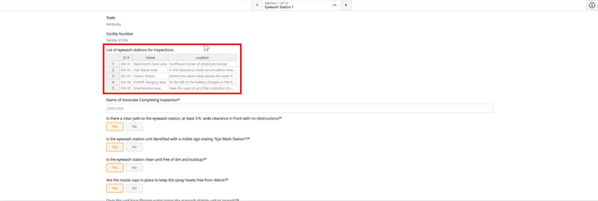

Previously only single fields from a data view query would show now we can view an entire table.
If your data view table is dependent on a system object, then the data view table will only populate after the workflow instance is associated with an object. Any system generated workflow instance that was pre-associated with an object should populate immediately when the data view is dependent on a system object.
